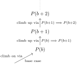

Proof writing is an art, a technical skill you will hone and refine throughout your career; and like any art, proof writing has many tricks of the trade. We gather a few here in the form of a collection of general proof techniques. Part of mastering these techniques involves understanding the circumstances where they can be of use. When selecting a technique, we are guided in part by the logical structure and particular mathematical content of the proposition under consideration. The proof techniques below are organized under this guiding principle.
By Definition 0.2.1 the only time an implication \(\mathcal{P}\implies\mathcal{Q}\) is false is when \(\mathcal{P}\) is true and \(\mathcal{Q}\) is false. Accordingly, the direct approach to proving an implication \(\mathcal{P}\implies \mathcal{Q}\) is to assume \(\mathcal{P}\) is true, and use this assumption to prove \(\mathcal{Q}\) is true.
A common indirect approach used to prove an implication \(\mathcal{P}\implies \mathcal{Q}\) is to prove its contrapositive\(\neg\mathcal{Q}\implies \neg \mathcal{P} \text{,}\) which is logically equivalent to the original implication. In this case we assume \(\mathcal{Q}\) is not true, and show \(\mathcal{P}\) is not true. (Exercise: use a truth table to show the contrapositive is logically equivalent to the original implication.)
The converse of an implication \(\mathcal{P}\implies \mathcal{Q}\) is the implication \(\mathcal{Q}\implies \mathcal{P}\text{;}\) the inverse of \(\mathcal{P}\implies\mathcal{Q}\) is the implication \(\neg\mathcal{P}\implies\neg\mathcal{Q}\text{.}\) Neither the converse nor the inverse is equivalent to the original implication, and thus neither of these can be used to give an indirect proof of \(\mathcal{P}\implies \mathcal{Q}\text{.}\) (Exercise: use a truth table to show that neither the converse nor the inverse implication is logically equivalent to the original implication. )
Again, using Definition 0.2.1, to directly show a disjunction \(\mathcal{P}\text{ or }\mathcal{Q}\) is true, we need only show one the two component propositions is true.
Alternatively, we can prove either of the implications \(\neg\mathcal{P}\implies\mathcal{Q}\) or \(\neg Q\implies \mathcal{P}\text{,}\) both of which are logically equivalent to \(\mathcal{P}\text{ or }\mathcal{Q}\text{.}\) (Exercise: use a truth table to show these three propositions are indeed equivalent!)
The equivalence \(\mathcal{P}\iff\mathcal{Q}\) is logically equivalent to the conjunction
\begin{equation*}
(\mathcal{P}\implies\mathcal{Q})\text{ and } (\mathcal{Q}\implies \mathcal{P})\text{.}
\end{equation*}
Accordingly, the standard way of proving \(\mathcal{P}\iff \mathcal{Q}\) is to prove the two implications \(\mathcal{P}\implies\mathcal{Q}\) and \(\mathcal{Q}\implies\mathcal{P}\) separately. (Exercise: use a truth table to show these propositions are indeed equivalent!)
The relation “\(\mathcal{P}\) implies \(\mathcal{Q}\)” is transitive: i.e., if \(\mathcal{P}\implies\mathcal{Q}\) and \(\mathcal{Q}\implies\mathcal{R}\text{,}\) then \(\mathcal{P}\implies\mathcal{R}\text{.}\) Similarly, the relation “\(\mathcal{P}\) is equivalent to \(\mathcal{Q}\)” is transitive. This allows us to prove an implication or equivalence via a chain of implications or chain of equivalences. When writing up a proof using this technique, use a vertically aligned format like the example below, treating one implication or equivalence per line, and adding a brief justification to the right:
It is also possible to build an argument as a hybrid chain of equivalences and implications. In this case the chain is only as strong as its weakest link. For example, a chain of the form
only shows that \(\mathcal{P}\implies\mathcal{S}\text{.}\) Indeed, we will have \(\mathcal{P}\iff\mathcal{S}\) if and only if the intervening implication \(\mathcal{Q}\implies\mathcal{R}\) is in fact an equivalence (i.e., the arrow goes both ways).
It is often tempting, for the sake of space, to try and prove an equivalence \(\mathcal{P}\iff\mathcal{Q}\) via a chain of equivalences, as opposed to showing \(\mathcal{P}\implies \mathcal{Q}\) and \(\mathcal{Q}\implies\mathcal{P}\) separately. When proceeding in this manner, make doubly sure that each \(\iff\) is indeed an equivalence: i.e., that the implication arrow really goes both ways at each step. Even if each step in your chain truly is an equivalence, you should consider whether this will be obvious to your reader.
The example below provides the proof that a function is invertible if and only if it is bijective (Theorem 0.1.23). The proof nicely illustrates some of the different techniques used for proving implications and equivalences. Additionally, it is a nice example of how to separate out cases of the argument into clearly distinguished steps.
Let \(\mathcal{P}\) be the proposition that \(f\) is invertible, and let \(\mathcal{Q}\) be the proposition that \(f\) is bijective. We prove the equivalence \(\mathcal{P}\iff \mathcal{Q}\) by proving the two implications \(\mathcal{P}\implies \mathcal{Q}\) and \(\mathcal{Q}\implies\mathcal{P}\text{.}\)
We must show that if \(f\) is invertible, then \(f\) is bijective. Assume \(f\) is invertible. Then \(f\) has an inverse \(f^{-1}\text{.}\) We show separately that \(f\) is injective and surjective, hence bijective.
We must show that if \(f\) is bijective, then \(f\) is invertible. Assume \(f\) is bijective. First we define a function \(g\colon Y\rightarrow X\) as follows: for all \(y\in Y\text{,}\) let \(g(y)\) be the unique element \(x\in X\) such that \(f(x)=y\text{.}\) Note that our definition of \(g\) uses both that \(f\) is surjective (there is some element \(x\) such that \(f(x)=y\))) and injective (there is exactly one element \(x\) such that \(f(x)=y\)).
Take any \(x\in X\) and let \(y=f(x)\text{.}\) By definition of \(g\text{,}\) we have \(g(y)=x\) and hence \(g(f(x))=g(y)=x\text{.}\) This proves \(g\circ f=\id_X\text{.}\)
Take any \(y\in Y\text{.}\) By definition of \(g\text{,}\)\(g(y)\) is the unique \(x\in X\) such that \(f(x)=y\text{.}\) Thus \(f(g(y))=f(x)=y\text{.}\) This proves \(f\circ g=\id_Y\text{.}\)
The technique of proof by contradiction (or reductio ad absurdum) proves a proposition \(\mathcal{P}\) by (a) assuming the negation \(\neg\mathcal{P}\) is true, and then (b) using this assumption to derive a proposition \(\mathcal{Q}\) known to be false. The choice of falsehood \(\mathcal{Q}\) is completely up to the person providing the proof. However, in order for the proof to be convincing, it should be clear, either logically or because of theory assumed to be known, that \(\mathcal{Q}\) is indeed false.
We prove the claim by contradiction. Assume there is an \(r\in \R\) such that \(r\cdot 0=1\text{.}\) Since \(r\cdot 0=0\) for any \(r\in \R\) (a property of multiplication by 0), we have \(1=r\cdot 0=0\text{:}\) a contradiction since \(1\ne 0\text{.}\) We conclude that there is no \(r\in \R\) such that \(r\cdot 0=1\text{.}\)
Proof by contradiction resembles, but is not quite the same thing as proving an implication via its contrapositive. Letting \(F\) denote an arbitrary falsehood (the \(\mathcal{Q}\) described above) what we do in a proof by contradiction is show that the implication \(\neg \mathcal{P}\implies F\) is true. Since \(F\) is false, and the implication is true, \(\neg \mathcal{P}\) must be false: equivalently, \(\mathcal{P}\) must be true.
Here “LHS” and “RHS” stand for left- and right-hand side, respectively. What exactly such an equality means depends very much on what kind of mathematical objects the two sides of the equation are: e.g., numbers, sets, functions, etc. Below we discuss equality for objects of a particular type in detail. (See Basic set properties and Basic function properties.) In all settings, the notion of equality will be transitive: i.e., if \(x=y\) and \(y=z\text{,}\) then \(x=z\text{.}\) We use transitivity implicitly when proving an equality via a chain of equalities as described below.
Often to prove an equality as in (0.3.1) we proceed in a sequence of intervening bite-size equalities, each of which is easy for the reader to digest. As with chains of implications/equivalences, we present such an argument in a vertically aligned format, with brief justifications to the right:
Never attempt to prove an equality by starting off with the equality you wish to prove, and then deduce a series of further equalities ending in some inanity: e.g.,
What this suggests is that you are in fact proving an implication: namely, if the desired equality is true, then\(0=0\text{.}\) Clearly this is not what we set out to prove! This type of fallacious argument is called “begging the question” (petitio princippii in Latin), as we assume that which was to be proven.
This requires proving the implication above for a general element \(x\text{,}\) and we may use any of the techniques described in Implication and Chains of implications/equivalences to do so.
Alternatively, you can prove \(A=B\) by proving the two set inclusions \(A\subseteq B\) and \(B\subseteq A\) separately. This is equivalent to proving the two implications \(x\in A\implies x\in B\) and \(x\in B\implies x\in A\) separately.
By Definition 0.1.16 The universal quantifier “for all \(x\in X\)” of item (ii) gives this subtask the feel of proving an identity: we must show that equality \(f(x)=g(x)\) holds for all\(x\in X\text{.}\) By the same token, to show (ii) does not hold, it suffices to show that \(f(x)\ne g(x)\) for some \(x\in X\text{.}\)
To prove \(f\) is surjective, we must prove the universal quantification:
\begin{equation*}
\text{for all } y\in Y, \text{ there exists an } x\in X\ \text{ such that } f(x)=y\text{.}
\end{equation*}
To prove \(f\) is not surjective, we must prove the negation of this proposition (Remark 0.2.9): i.e., there exists a \(y\in Y\) for which there is no \(x\in X\) with \(f(x)=y\text{.}\)
To show \(f\) is bijective directly using Definition 0.1.19, we must show that \(f\) is injective and surjective. This is equivalent to showing that for \(y\in Y\) there exists a unique element \(x\in X\) such that \(f(x)=y\text{.}\)
Mathematical induction is a technique for proving universal quantifications of the form
\begin{equation*}
\text{For all integers } n\geq b, \, P(n)\text{,}
\end{equation*}
where \(b\) is a fixed starting integer, called the base, and \(P\) is a predicate defined on the integers. If the setting makes clear that \(n\) ranges over integers, we write such propositions using logical notation as
Suppose \(P\) is a predicate of integers. To prove the proposition \(\forall n\geq b\, P(n)\) by induction (sometimes called weak induction), we proceed in two steps.
In practice, if proving the implication \(P(n)\implies P(n+1)\) directly, this means we assume \(P(n)\) is true (the induction hypothesis), and use this assumption to show \(P(n+1)\) is true.
Make explicit the predicate \(P\) in question, as well as the base case \(b\text{.}\) We illustrate this preparatory “Step 0” in the examples below.
So why does proof by induction work? In other words, why is it a valid proof technique? Imagine our propositions \(P(n)\) as forming an infinite ladder that we wish to ascend. Cautious climbers that we are, we only will step on a rung if we know the corresponding proposition is true. Knowing \(P(b)\) is true (the base step) allows us to step onto the first rung. The universal implication \(\forall n\geq b\, P(n)\implies P(n+1)\) (induction step) gives us a rule that says if rung \(n\) is secure (i.e., true), then so is rung \(n+1\text{.}\) Since this rule holds for all rungs (i.e., for all \(n\geq b\)), we can safely ascend the entire ladder!

Figure0.3.9.Mathematical induction as ladder of propositions
This technique is called strong induction, as now the induction hypothesis is much stronger: to prove this implication directly we assume \(P(k)\) is true for all \(1\leq k\leq n\) (not just \(k=n\) as in weak induction), and use this assumption to show \(P(n+1)\) is true.
In fact, strong induction is, logically speaking, no stronger than weak induction. Both techniques apply to propositions of the form \(\forall n\geq b\, P(n)\text{,}\) and you are free to choose which form of induction to use each time. We typically use strong induction out of convenience, when the nature of the predicate \(P\) is such that we can prove \(P(n+1)\) most elegantly by assuming \(P(b), P(b+1), \dots, P(n)\text{,}\) as opposed to just \(P(n)\text{.}\) The following example is characteristic in this regard.
Let \(n\geq 2\text{,}\) and assume \(P(k)\) is true for all \(2\leq k\leq n\text{:}\) i.e., for all such \(k\) we assume \(k\) can be written as a product of primes. We use this assumption to prove \(P(n+1)\text{:}\) i.e., that \(n+1\) is a product of primes. We proceed in two cases, depending on whether \(n+1\) is itself prime.
If \(n+1\) is not prime, then we can factor \(n+1\) nontrivially as \(n+1=k_1k_2\text{.}\) Here “nontrivially” means that we have \(2\leq k_1,k_2\leq n\text{.}\) Using the strong induction hypothesis, we may assume that \(k_1\) and \(k_2\) are both products of primes: i.e., we have